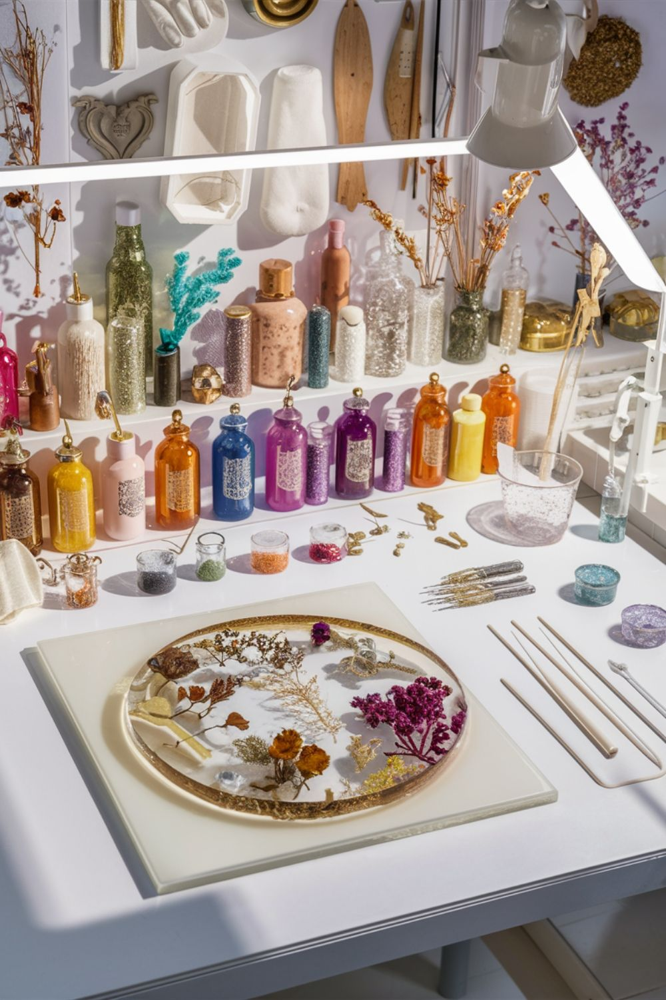
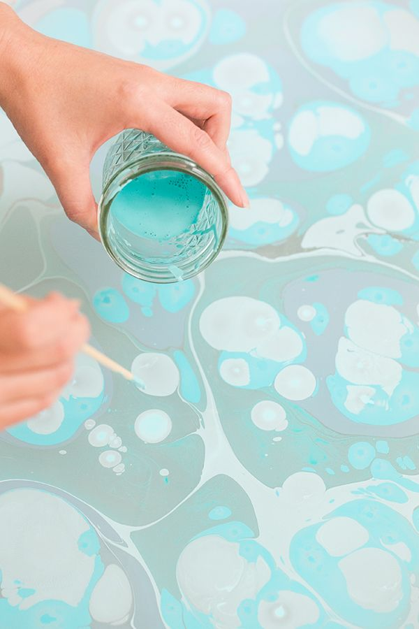
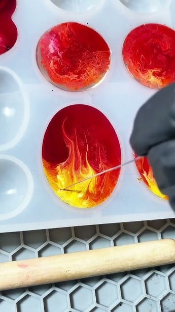
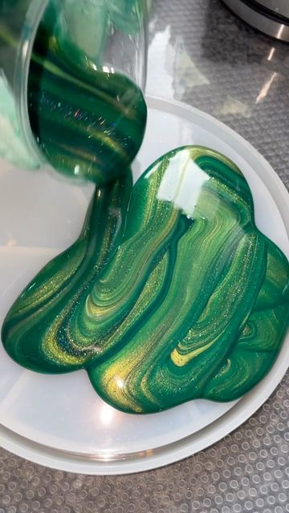
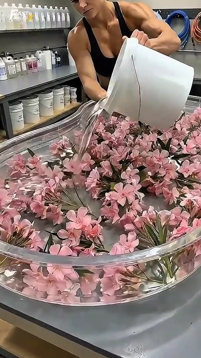
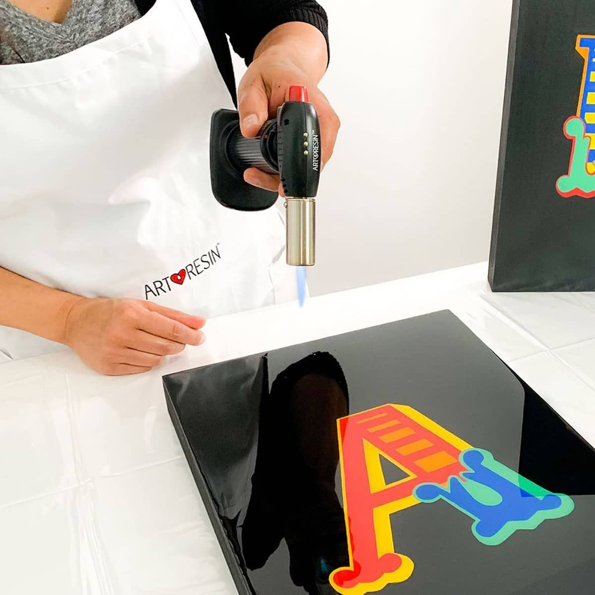
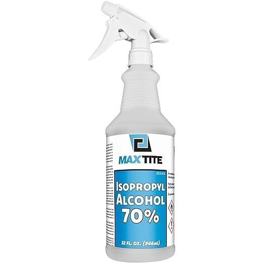
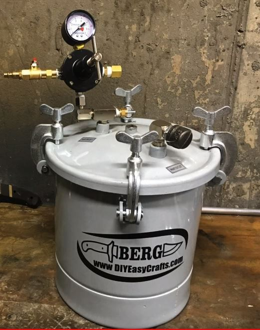
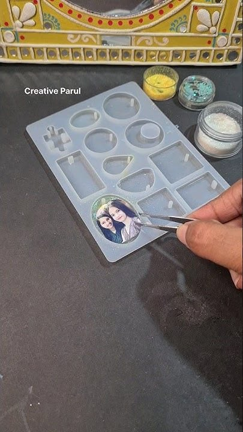

The Ultimate Guide to Resin Art:
Tips, Tricks & Secrets
Everything you need to know — from mixing ratios and bubble-free pours to pigment techniques, mould release, and finishing like a professional. Unlock stunning results every time.
Getting Started: What You Need to Know
Resin art may look complex, but with the right preparation it becomes intuitive and deeply rewarding. Before you open any bottle of resin, understanding the fundamentals will save you hours of frustration and wasted materials.
-
Work at 21–24°C (70–75°F) — Resin is temperature-sensitive. Cold resin becomes cloudy and thick; heat causes rapid bubbling. Warm your room before you pour.
-
Measure by weight, not volume — Scales give you far more accurate ratios than measuring cups. Even a 5% error in ratio causes sticky, under-cured resin.
-
Mix slowly for 3–5 minutes — Scrape the sides and bottom of the cup constantly. Unmixed resin pockets will never cure and leave soft sticky patches.
-
Always protect your workspace — Silicone mats or plastic sheeting protect surfaces. Resin is permanent on most materials once cured.
-
Ventilate, always — Epoxy vapours are harmful. Open windows, use a respirator rated for organic vapours, and wear nitrile gloves every single time.
-
Let it rest 5 minutes before pouring — After mixing, allow resin to sit. Large bubbles will rise and pop on their own before you add pigments.

Core Resin Techniques
Master these six methods and you'll be able to create any style of resin art — from fluid cells to sharp geode lines.
Achieving a Bubble-Free Finish
Bubbles are the number-one enemy of flawless resin work. Here are the professional methods used in every ResinLux Studio pour.
Warm Your Resin
Place sealed resin bottles in a warm water bath (40°C) for 10 minutes before opening. Warmer resin is thinner and releases trapped air far more easily than cold resin.

Mix in a Zig-Zag Pattern
Avoid circular stirring which folds air in. Instead, use a slow zig-zag or figure-8 motion, scraping the bottom and sides of the cup constantly for the full 4-minute mix.

Rest Before Pouring
After mixing, let the cup rest 3–5 minutes. This alone removes 60–80% of surface bubbles before any tools are needed. Cover loosely with a cup to keep warm.

Use a Butane Torch
Pass the torch 15cm above the surface in a sweeping motion. The brief heat pops bubbles instantly. Never hold the torch still — scorching resin causes yellowing and pitting.

Isopropyl Spray (90%+)
A fine mist of 90%+ isopropyl alcohol disrupts surface tension and causes bubbles to collapse. Use sparingly — too much can cloud the surface or affect pigment distribution.

Use a Pressure Pot
For crystal-clear castings in moulds, a pressure pot at 40–50 PSI compresses all remaining bubbles to micro-size — invisible to the naked eye. The gold standard for jewellery and encapsulations.


Pigments, Dyes & Colours
Colour is everything in resin art. Choosing the right colourant for each application separates amateur pours from professional work.
Mica Powders
The most popular choice. Mica powders create a metallic shimmer that catches light beautifully. They mix easily, stay suspended in resin, and are available in hundreds of shades. Best for geodes and metallic pours.
Alcohol Inks
Intensely pigmented, transparent, and fast-moving. Alcohol inks create watercolour-like blooms when dropped into resin. They don't fully mix — they float and dance, making every piece unique.
Acrylic Paints
Water-based acrylics can be used sparingly (max 10% of total resin volume). Too much causes curing failure. Good for opaque block colours. Avoid metallics from acrylic ranges — mica powder gives better results.
Resin Pigment Pastes
Specifically formulated for resin, pastes give rich, opaque, consistent colour without affecting curing ratios. A small pea-size amount colours a large pour — highly concentrated and UV-stable.
Glow-in-the-Dark Powder
Phosphorescent powders that charge under light and glow for hours. Best used in clear or very lightly tinted resin so the glow shows through. Popular for night-sky and galaxy designs.
Gold & Silver Leaf
Real or imitation metal leaf adds dramatic texture and depth. Apply sheets to the surface of partly-cured resin (tack stage) and press gently. Seal with a final clear coat to prevent tarnishing.
7 Common Mistakes & How to Fix Them
Cause: Incorrect mixing ratio, undermixed resin, or contamination with water. Fix: You can try applying a thin fresh layer of properly mixed resin over the tacky surface — this can re-trigger curing in mild cases. For severe cases, scrape off and restart. Always mix by weight and mix for the full recommended time.
Cause: UV exposure and low-grade resin. Fix: Always use UV-stabilised or UV-resistant epoxy for pieces that will be displayed near windows or outdoors. Apply a UV-protective varnish as a topcoat. Store finished pieces away from direct sunlight.
Cause: Pouring too much resin at once (exothermic reaction). Fix: For deep pours, work in layers no deeper than 1–2cm. Use deep-pour formula resin for thicker sections. Spread resin over a wide area to dissipate heat, and never pour into a tall narrow cup of mixed resin.
Cause: Moisture contamination, cold resin, or over-mixing with a power drill. Fix: Always work in low-humidity environments (<50% RH). Warm bottles before use. Mix by hand and avoid power tools unless using a vacuum degassing system afterward.
Cause: Silicone or oil contamination on the surface or tools. Fix: Wipe all surfaces and tools with 90% isopropyl alcohol before use. If you use silicone mats, clean thoroughly. Even hand cream can cause fisheyes — always wear gloves.
Cause: Over-mixing pigmented sections together, or using too much silicone oil. Fix: Keep colour sections separate and only slightly swirl them together. Work quickly before resin thickens. Less is more with silicone — 1–2 drops is sufficient for a 200ml cup.
Cause: Uncovered curing environment. Fix: Always tent your piece with a cardboard box or tub during the 24-hour cure. Wipe the tenting box interior with a damp cloth to trap dust. Work in the same area you cure to avoid disturbing settled dust.

Essential Tools & Materials
Build your resin toolkit strategically. Start with essentials and expand as your practice grows.
Starter Essentials
- ✓ 2-part epoxy resin (art grade)
- ✓ Digital kitchen scales (0.1g accuracy)
- ✓ Graduated mixing cups (silicone preferred)
- ✓ Wooden / silicone stir sticks
- ✓ Nitrile gloves (box of 100)
- ✓ Respirator mask (OV/P100)
- ✓ Silicone mat / craft paper
- ✓ Butane kitchen torch
Colour & Effects
- ✓ Mica powder set (20+ colours)
- ✓ Alcohol inks (6–12 colours)
- ✓ Silicone oil (for cells)
- ✓ Gold + silver leaf sheets
- ✓ Glow powder
- ✓ Resin pigment pastes
- ✓ Heat gun (alternative to torch)
- ✓ Isopropyl alcohol 90%+
Advanced Upgrades
- ✓ Pressure pot + air compressor
- ✓ Vacuum degassing chamber
- ✓ UV nail lamp (for UV resin)
- ✓ Orbital sander (wet sanding)
- ✓ 400–3000 grit wet/dry sandpaper
- ✓ Polishing compound + buffer
- ✓ Resin pigment pastes UV-stable
- ✓ Professional silicone moulds
Get New Tips & Tutorials First
Join 12,000+ resin artists who get our weekly deep-dives, technique breakdowns, and exclusive subscriber-only guides delivered straight to their inbox.
- Free Beginner's Checklist PDF
- Weekly technique deep-dives
- Early access to new tutorials
- Exclusive subscriber discounts
Subscribe & Ask a Question
Have a specific technique question? Ask below and our team may feature it in the next tutorial.
You're in!
Thank you for subscribing. Check your inbox for your free Beginner's Checklist PDF. We'll feature your question in an upcoming tutorial if selected.
Browse More Articles